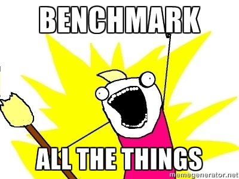

Benchmarks !

With: IPython and it's magic function %timeit
#1 Count elements in list
# SLOW
how_many = 0
for element in BIG_LIST:
how_many += 1
print how_many
# FAST
print len(array)
For 1 000 000 elements it's 26.5 ms vs 96.7 ns

274 000 times faster actually